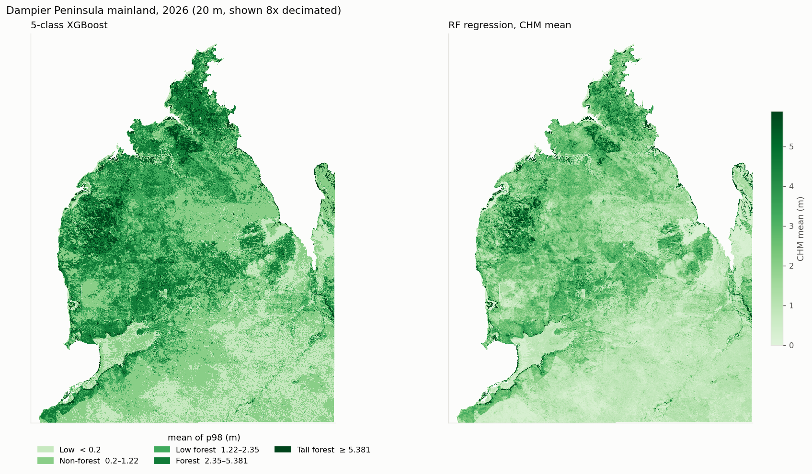
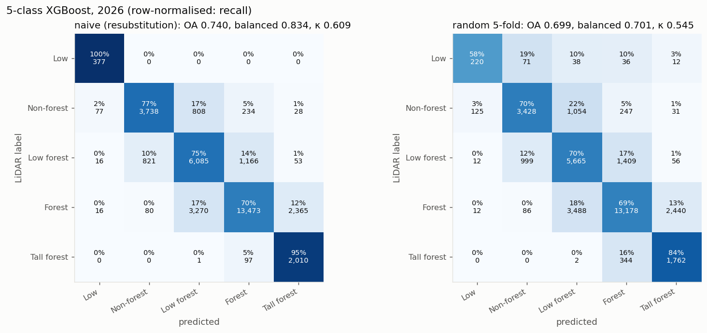
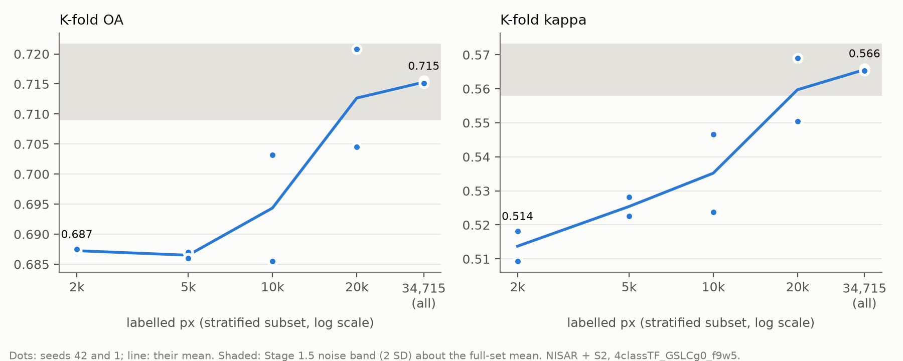
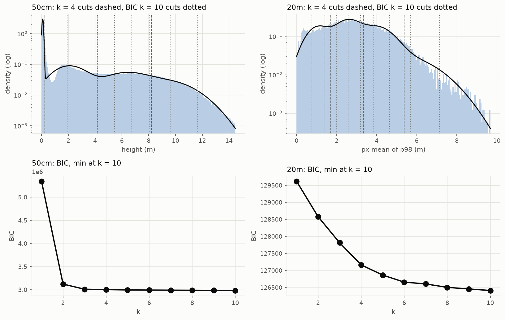
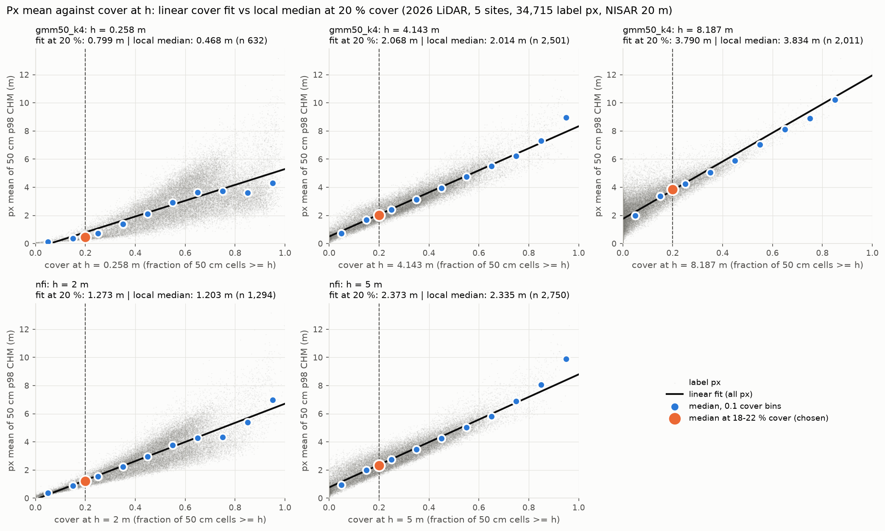
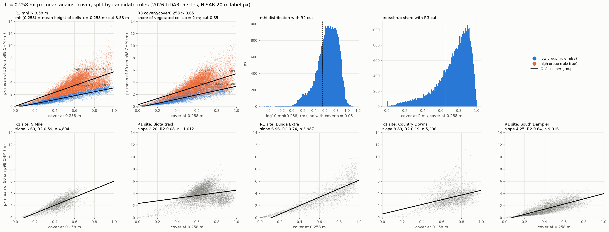
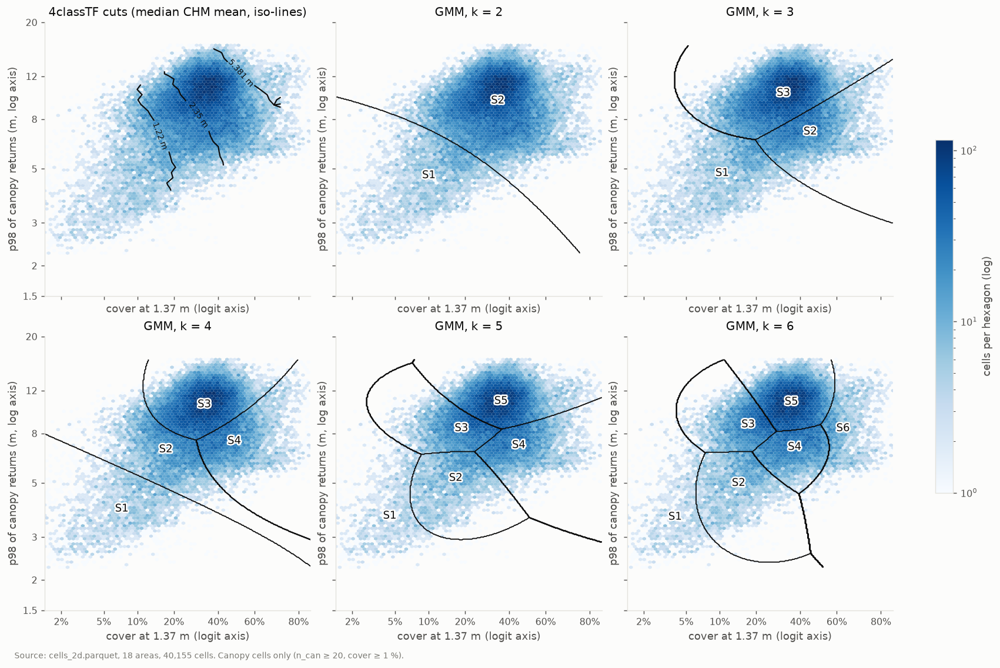
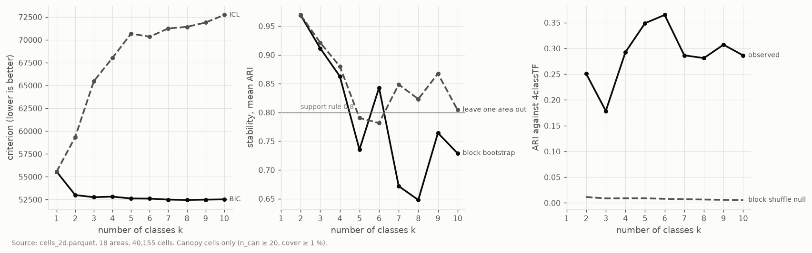
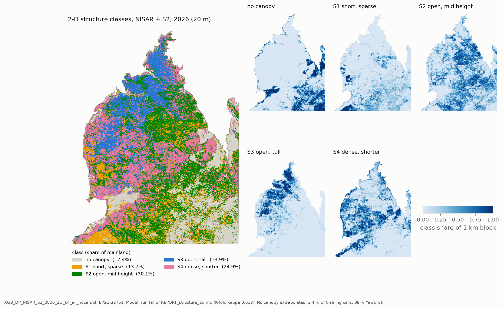

3 · Classification first
Height classes from the 2026 stack; an accuracy diagnosis; new class cuts; XGBoost vs MLP; then the finding that moved us to regression.
Result
| Step | Result | Detail |
|---|---|---|
| 4classTF, NISAR + S2 (XGB) | K-fold OA 0.717, kappa 0.568 (6 seeds); noise band 0.006 OA | diagnosis |
| Accuracy diagnosis | NISAR processing not the limit; the sites differ; more labels do not help (20 k → 34.7 k: +0.003 OA) | diagnosis |
| Class cuts re-derived | set gmm50ag4_y, px-mean cuts 0.641 / 1.508 / 2.483 m | REPORT_class_defs.txt |
| MLP vs XGB | MLP = XGB: not adopted | below |
| 2-D structure classes | no natural thresholds: one density mode | REPORT_structure_2d.md |
The first 2026 classification


Accuracy diagnosis (summary)
| run | OA | balanced | kappa | F1w |
|---|---|---|---|---|
4classTF_GSLCg0_f9w5 | 0.716 | 0.742 | 0.566 | 0.726 |
4classTF_GSLCg0_f9w5_seed1 | 0.715 | 0.743 | 0.565 | 0.726 |
4classTF_GSLCg0_f9w5_seed2 | 0.720 | 0.743 | 0.571 | 0.730 |
4classTF_GSLCg0_f9w5_seed3 | 0.713 | 0.742 | 0.563 | 0.724 |
4classTF_GSLCg0_f9w5_seed4 | 0.721 | 0.744 | 0.572 | 0.731 |
4classTF_GSLCg0_f9w5_seed5 | 0.718 | 0.742 | 0.569 | 0.728 |
mean | 0.717 | 0.743 | 0.568 | 0.727 |
sd | 0.003 | 0.001 | 0.004 | 0.003 |
min | 0.713 | 0.742 | 0.563 | 0.724 |
max | 0.721 | 0.744 | 0.572 | 0.731 |
noise_band_2sd | 0.006 | 0.002 | 0.008 | 0.006 |
source: nisar_2026/outputs/diagnosis/stage15.csv (2026-10-29 13:37)
Stage 1.5 runs on the reference stack: 6 seeds of NISAR + S2, then NISAR only (_SAR).

Full record (stages 0–2b, site difference, covariates, fire): NISAR accuracy diagnosis.
New class cuts
The 4-class cuts 1.22 / 2.35 m came from a 2025 cover fit. We re-derived them from the 2026 LiDAR:
- GMM, k = 4, on the 50 cm p98 cells ≥ 0.2 m (converged, tol 1e-6) → cut heights 0.49 / 2.81 / 5.30 m.
- Each cut height → median px mean at 18–22 % cover at that height (local median, not a linear fit).
- Result
gmm50ag4_y: px-mean cuts 0.641 / 1.508 / 2.483 m.



MLP vs XGB
| source | model | macro F1 | worst-class F1 | F1w |
|---|---|---|---|---|
| Dampier | XGB | 0.698 | 0.576 | 0.761 |
| Dampier | MLP 256-128 (3 seeds) | 0.700 | 0.569 | 0.761 |
| Yawuru kept | XGB | 0.746 | 0.591 | 0.803 |
| Yawuru kept | MLP 256-128 (3 seeds) | 0.739 | 0.601 | 0.793 |
source: nisar_2026/outputs/classify_cd_gmm50ag4_y/metrics.csv (2026-11-02 17:04); class_defs/outputs/mlp_gmm50ag4_y_wide/seeds.csv (2026-11-02 17:52)
- Random stratified 5-fold, per source, never blended. Headline = macro F1.
- MLP width searched 128-64 to 1024-512: best 256-128 (dropout 0.4). Wider = no gain. No overfit (train − K-fold 0.028).
- Dampier: equal. Yawuru: XGB +0.007, mostly the top class (MLP recall 0.68).
- Decision: MLP not adopted — no gain for more cost (GPU, seeds, tuning).
- Both models lead with the 168 A L-band track (HH / HV) and S2 greenness.
Code: mlp_2026.py (env pytorch),
XGB classify_2026.py --extra-labels.
Outputs: class_defs\outputs\mlp_gmm50ag4_y_wide\, nisar_2026\outputs\classify_cd_gmm50ag4_y\.
No natural thresholds → regression



Because every class is a cut through a continuum, we regress the structure variables directly: 4 · Regression.